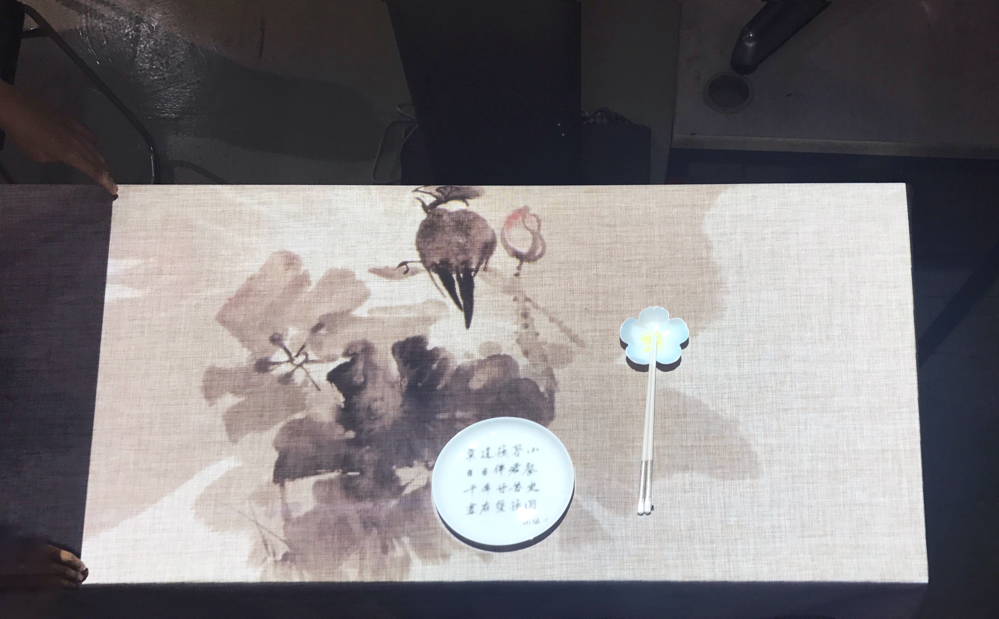
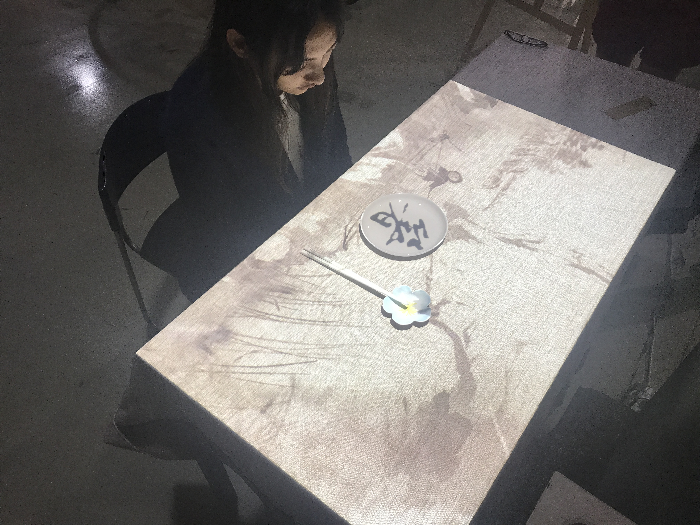
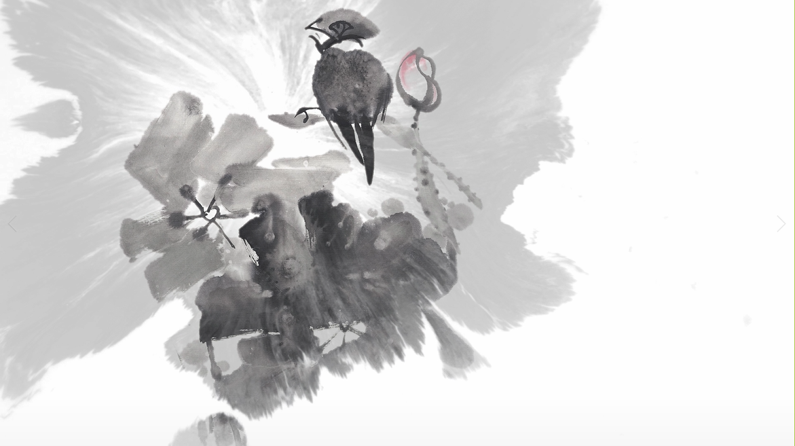

Zhù箸
A multimedia dinning experience that awakens culture inheritance
Cross-strait Youth Maker Competition, Shanghai
Aug 28th, 2017
Zhù was made during the Second Cross-strait Youth Maker Competition and was awarded with the Third Place after the 48-hour hackathon.
After studying away for a year, all four members of our group noticed that most foriegners we met abroad took chopsticks as a very important aspect of Chinese dinning culture. They tried their best to learn how to use it every time they visited Chinese restaurants. However, most people in China fail to take them as a part of our culture because we are too close to them.
In order to awaken culture inheritance, we decided to make daily objects more interactive, combined with animation and projection to design an emersive dinning experience. Customers will be attracted by the unique experience but end up with learning the history and culture of chopsticks.



in collaboration with Prudence Yao Nan Zhao and Weiyu Wang.
< prev
Home
next >